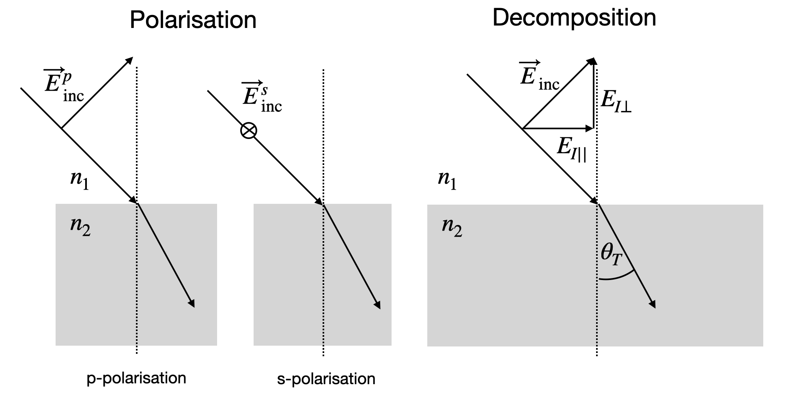

29 Reflection and Refraction of Electromagnetic Waves
29.1 Effect of the Refractive Index
The effect of the material on the wave propagation can be understood when considering a plane wave \(E_s\) incident on a thin material slab of thickness \(\Delta z\).
\[ \begin{aligned} E & =E_0 \cdot e^{-i(\omega t-k z-(n-1) k \cdot \Delta z)} \\ & =E_0 e^{-i(n-1) k \Delta z} e^{i(\omega t-k z)} \\ & =e^{-i \theta} E_s \quad \text { with } \theta=k(n-1) \Delta z \end{aligned} \tag{29.1}\]
For small values of \(\theta\) the exponential function can be approximated by
\[e^x \sim 1+x+\frac{x^2}{2} \tag{29.2}\]
such that we obtain
\[e^{-i k(n-1) \Delta z} \approx 1-i k(n-1) \Delta z-\frac{k^2(n-1)^2 \Delta z^2}{2} \tag{29.3}\]
The total field behind the thin slab therefore is
\[E(z)=\underbrace{E_0 e^{i(\omega t-k z)}}_{E_e}-\underbrace{i k(n-1) \Delta z E_0 e^{i(\omega t-k z)}}_{E_{\text {medium}}} \tag{29.4}\]
As shown in Figure fig-components, the resulting wave is delayed by a phase factor \(k(n-1) \Delta z\) (see Equation eq-wave-slab) and the amplitude is reduced by a factor \(k(n-1) \Delta z\).
29.2 General Description of Reflection and Refraction
Before we examine the behavior of electromagnetic waves at boundaries, we need to define the geometry and examine the electric and magnetic fields present. Figure fig-setup-k shows the wavevectors of the incident \(\vec{k}_I\), reflected \(\vec{k}_R\) and transmitted \(\vec{k}_T\) waves in the two materials with the refractive indices \(n_1\) and \(n_2\).

These wavevectors are connected to the following plane waves:
\[ \vec{E}_{ inc}=\vec{E}_I e^{i(\omega_I t -\vec{k}_I\cdot \vec{r})} \tag{29.5}\]
\[ \vec{E}_{ ref}=\vec{E}_R e^{i(\omega_R t -\vec{k}_R\cdot \vec{r})} \tag{29.6}\]
\[ \vec{E}_{ tra}=\vec{E}_T e^{i(\omega_T t -\vec{k}_T\cdot \vec{r})} \tag{29.7}\]
As discussed in Equation eq-incident through Equation eq-transmitted, we must consider the direction of polarization of their electric or magnetic fields. We differentiate between:
- p-polarized light: electric field is in the plane of incidence (given by the \(k\)-vector and the surface normal), also called transverse magnetic (TM)
- s-polarized light: electric field is perpendicular to the plane of incidence, also called transverse electric (TE)

As shown in Figure fig-pol-decomp , we need to split these polarisation vectors into components that are parallel (\(||\)) or perpendicular (\(\perp\)) to the interface. This is required for applying boundary conditions for the electric and magnetic fields.
29.2.1 Boundary Conditions
The boundary conditions for the electric or magnetic field passing an interface are derived from the Maxwell equations.

Let us take the divergence of the displacement field \(\nabla \cdot \vec{D}=\rho_f\) which is equal to the density of free charges. When integrating both sides over the volume:
\[ \int\nabla \vec{D} dV=\int \rho_f dV \tag{29.8}\]
we can apply Gauss’ theorem and replace the volume integral over the divergence with an integral over closed surface of that volume:
\[ \oint \vec{D} d\vec{A}= q_f \tag{29.9}\]
where \(d\vec{A}\) is a vector standing perpendicular on the surface element \(dA\) and \(q_f\) are the free charges in the volume. When we consider a pillbox-shaped volume straddling the interface between two materials, the surface integral can be broken down into three parts:
- Top surface (in material 1)
- Bottom surface (in material 2)
- Side surface (cylindrical part)
The total surface integral becomes:
\[ \oint \vec{D} \cdot d\vec{A} = \int_{\text{top}} \vec{D}_1 \cdot d\vec{A} + \int_{\text{bottom}} \vec{D}_2 \cdot d\vec{A} + \int_{\text{side}} \vec{D} \cdot d\vec{A} \]
For a pillbox of height \(h\) and radius \(r\):
The top surface contributes: \(\vec{D}_1 \cdot \hat{n}A\) (negative because \(d\vec{A}\) points along \(\hat{n}\))
The bottom surface contributes: \(-\vec{D}_2 \cdot \hat{n}A\)
The side surface contribution goes to zero as \(h \to 0\) (as area \(\sim 2\pi rh\))
Therefore:
\[ \oint \vec{D} \cdot d\vec{A} = A(\vec{D}_1 - \vec{D}_2) \cdot \hat{n} = q_f \]
Key Points
The side surface contribution vanishes as \(h \to 0\) because:
- Its area scales with \(h\) (\(2\pi rh\))
- The field components remain finite
Only the normal components of \(\vec{D}\) contribute because:
- \(d\vec{A}\) is parallel to \(\hat{n}\) for top and bottom surfaces
- The tangential components don’t contribute to the dot product
The ratio \(q_f/A\) becomes the surface charge density \(\sigma_f\) as \(h \to 0\)
Following that, we obtain the boundary condition for the normal component of the displacement field:
\[ D_{1\perp}=D_{1\perp} \tag{29.10}\]
This implies a jump in the normal electric field component:
\[ \frac{E_{1\perp}}{E_{2\perp}}=\frac{\epsilon_2}{\epsilon_1} \tag{29.11}\]
as \(D=\epsilon E\). Another boundary condition arises from the curl of the electric field. Using the Maxwell equation:
\[ \nabla \times \vec{E}=-\frac{\partial \vec{B}}{\partial t} \tag{29.12}\]
Integrating both sides over an area and applying Stokes theorem:
\[ \oint \vec{E} d\vec{l}=-\frac{\partial}{\partial t}\int \vec{B}d\vec{A} \tag{29.13}\]
Consider a rectangular loop straddling the interface between two media, with a height \(h\) a width \(w\) and a normal to the interface \(\hat{n}\) the line integral can be broken down into four parts:
- Top segment (in medium 1)
- Bottom segment (in medium 2)
- Two vertical segments connecting them
The line integral becomes:
\[ \oint \vec{E} \cdot d\vec{l} = w\vec{E}_1 \cdot \hat{t} - w\vec{E}_2 \cdot \hat{t} + \text{(vertical segments)} \]
where \(\hat{t}\) is the unit vector tangent to the interface.
As \(h \to 0\):
- The contribution from vertical segments vanishes (as \(h \to 0\))
- The area of the loop approaches zero, making the right-hand side zero: \[-\frac{\partial}{\partial t}\int \vec{B}\cdot d\vec{A} \to 0\]
Therefore:
\[ w(\vec{E}_1 - \vec{E}_2) \cdot \hat{t} = 0 \]
Since \(w \neq 0\), this implies:
\[ (\vec{E}_1 - \vec{E}_2) \cdot \hat{t} = 0 \]
This can be rewritten in terms of the cross product with the normal vector:
\[ \hat{n} \times (\vec{E}_2-\vec{E}_1)=0 \tag{29.14}\]
Therefore:
\[ E_{2||}=E_{1||} \tag{29.15}\]
indicating that the tangential component of the electric field is conserved.
Boundary Conditions for the Magnetic Field
For the magnetic field, we can derive boundary conditions using similar approaches. Starting with Ampère’s law:
\[ \nabla \times \vec{H}=\vec{J}+\frac{\partial \vec{D}}{\partial t} \]
Integrating over an area and applying Stokes’ theorem:
\[ \oint \vec{H} \cdot d\vec{l}=\int \vec{J} \cdot d\vec{A}+\frac{\partial}{\partial t}\int \vec{D} \cdot d\vec{A} \]
Using the same rectangular loop approach as with the electric field, but now in the limit as \(h \to 0\):
- The area integral of the displacement current (\(\partial \vec{D}/\partial t\)) vanishes
- The surface current density \(\vec{K}=\vec{J}dA\) remains finite
This yields:
\[ \hat{n} \times (\vec{H}_2-\vec{H}_1)=\vec{K} \]
In the absence of surface currents (\(\vec{K}=0\)), we have:
\[ H_{2||}=H_{1||} \tag{29.16}\]
For the normal component, starting from \(\nabla \cdot \vec{B}=0\) and using the pillbox approach as with the electric field:
\[ \oint \vec{B} \cdot d\vec{A}=0 \]
This leads directly to:
\[ B_{1\perp}=B_{2\perp} \tag{29.17}\]
Since \(\vec{B}=\mu\vec{H}\), this implies a jump in the normal component of the H-field:
\[ \frac{H_{1\perp}}{H_{2\perp}}=\frac{\mu_2}{\mu_1} \tag{29.18}\]
These boundary conditions for the magnetic field complement those for the electric field and are essential for determining the reflection and transmission coefficients at interfaces.
Summary Boundary Conditions at an Interface
For a boundary between two media (1 and 2) with surface normal \(\hat{n}\):
Electric Field
- Normal component (with surface charge density \(\sigma_f\)): \[\epsilon_1 E_{1\perp} - \epsilon_2 E_{2\perp} = \sigma_f\]
- Tangential component: \[E_{1||} = E_{2||}\]
Magnetic Field
- Normal component: \[B_{1\perp} = B_{2\perp}\]
- Tangential component (with surface current density \(\vec{K}\)): \[\hat{n} \times (\vec{H}_2-\vec{H}_1)=\vec{K}\]
In the absence of free charges (\(\sigma_f = 0\)) and currents (\(\vec{K} = 0\)), these reduce to:
- \(\epsilon_1 E_{1\perp} = \epsilon_2 E_{2\perp}\)
- \(E_{1||} = E_{2||}\)
- \(B_{1\perp} = B_{2\perp}\)
- \(H_{1||} = H_{2||}\)
29.2.2 Reflection/Refraction
29.2.2.1 Frequency and Wavevector Matching
Referring to Figure fig-coordinates, we can explicitly write down the components of the wavevectors of the three waves in our coordinate system:

According to the coordinate system shown in Figure fig-coordinates, we have:
\[ \begin{aligned} \vec{k}_I &= k_I \cos(\theta_I)\hat{e}_x+k_I \sin(\theta_I)\hat{e}_z \\ \vec{k}_R &= -k_R \cos(\theta_R)\hat{e}_x+k_R \sin(\theta_R)\hat{e}_z \\ \vec{k}_T &= k_T \cos(\theta_T)\hat{e}_x+k_T \sin(\theta_T)\hat{e}_z \end{aligned} \tag{29.19}\]
Note that the component \(\hat{e}_x\) always provides the wavevector component perpendicular to the interface, while \(\hat{e}_z\) is the tangential (parallel) component. The total field on both sides is given by:
\[ \vec{E}=\vec{E}_{inc}+\vec{E}_{ref} \quad \text{(for } x<0 \text{)} \tag{29.20}\]
and
\[ \vec{E}=\vec{E}_{tra} \quad \text{(for } x>0 \text{)} \tag{29.21}\]
For these fields to match according to our previously described boundary conditions, we require:
\[ \omega_I=\omega_R=\omega_T \tag{29.22}\]
This frequency matching confirms our initial intuition. Along the interface, we also need phase matching of the waves as discussed in the wave optics chapter:
\[ \vec{k}_I\cdot \vec{r}=\vec{k}_R\cdot \vec{r}=\vec{k}_T\cdot \vec{r} \tag{29.23}\]
at all positions \(\vec{r}\) that belong to the interface (i.e., \(x=0\)). Therefore \(\vec{r}=\lbrace 0,y,z \rbrace\) and the equalities yield:
\[ k_I\sin(\theta_I)=k_R\sin(\theta_R)=k_T\sin(\theta_T) \tag{29.24}\]
Since the magnitude of the wavevector of the incident and the reflected light is the same (both waves travel in the same material), we find:
\[ \theta_I=\theta_R \tag{29.25}\]
For the incident and transmitted waves, we must account for the change in wavenumber:
\[ \begin{aligned} n_1 k_0\sin(\theta_I) &= n_2 k_0\sin(\theta_T) \\ n_1 \sin(\theta_I) &= n_2 \sin(\theta_T) \end{aligned} \tag{29.26}\]
Equation eq-snell represents Snell’s law, which results from the conservation of the parallel component of the wavevector across an interface, while the normal component must have a jump according to the refractive indices.